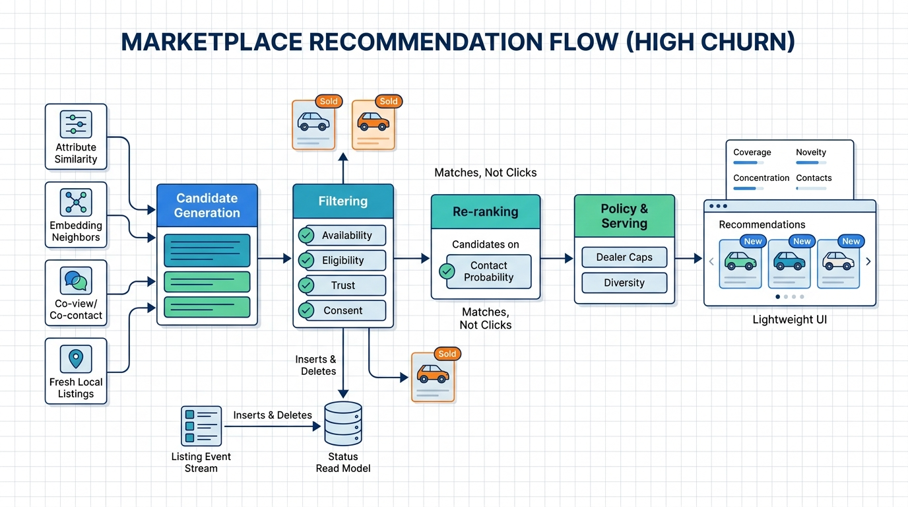

Part IV — DISCOVERY: Matching Intent to Inventory
Recommendations for Inventory That Disappears

Image generated by Google Gemini (gemini-3-pro-image-preview)
Part IV — DISCOVERY: Matching Intent to Inventory

Image generated by Google Gemini (gemini-3-pro-image-preview)